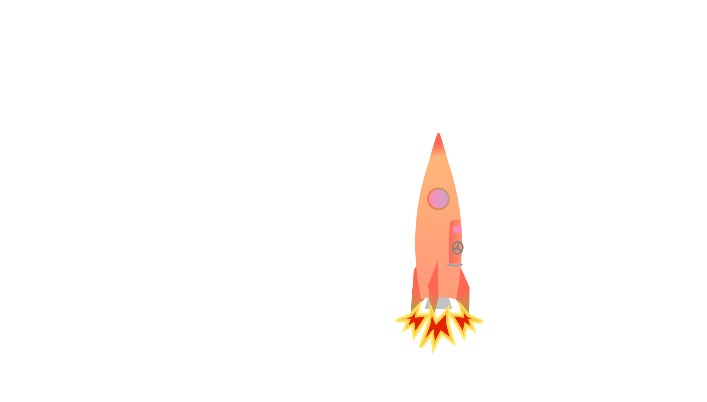

Starte die Rakete, um bei der Mission dabei zu sein.
In dem Planetencluster Aliterrea befinden sich vier erdähnliche Planeten.
Die Zivilisationen auf den Planeten sind ähnlich fortgeschritten; Damit einhergehend stehen sie auch vor ähnlichen Problemen in Bezug auf Nachhaltigkeit, Ungleichheit, und so auch politischer Stabilität.
Eine zentrale Rolle bei der Verursachung als auch der Lösung dieser Probleme spielt zwangsläufig das wirtschaftliche System.
Bis vor wenigen Zeiteinheiten waren die Wirtschaftssysteme auf allen vier Planeten auf profitorientiertes Wachstum ausgerichtet, wobei eine politische Ebene zur leichten Regulierung in das Marktgeschehen eingriff.
Um sich der Probleme anzunehme, haben drei der Planeten - Kapitalus, Varicrementer und Subsistur - ihre Wirtschaftssysteme zum Teil radikal umgestellt.
Nur auf dem Planeten Habitaculum wird bisher weitergewirtschaftet wie zuvor, obwohl klar ist, dass so langfristig die eigene Lebensgrundlage zerstört wird.
Daher begeben sich die Bewohner Habitaculums auf eine Reise zu ihren Nachbarplaneten, um sich Erfahrung und Inspiration für die Umstellung ihres Wirtschaftssystems einzuholen.
Starte die Rakete, um bei der Mission dabei zu sein.